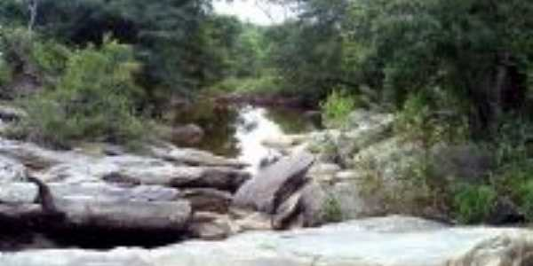

Informações técnicas sobre relevo, população, IDH etc.
| INFORMAÇÕES | |
|---|---|
| Municípios limítrofes | Mombaça, Saboeiro, Acopiara e Arneiroz |
| Fundação | 25 de maio de 1951 (70 anos) |
| População total | 18 745 hab |
| Densidade | 38,5 hab./km² |
| Área total | 486,859 km² |
| Clima | Tropical quente semiárido |
| Altitude | 580 m |
| IDH | 0,58 — baixo |
| PIB | 44 776,195 mil |
| INFORMAÇÕES TERRITORIAIS | |
|---|---|
| Número de habitantes | 18 745 hab |
| Superfície de Catarina |
48 686 hectares
486,86 km² (187,98 sq mi) |
| Densidade populacional | 42,5 ha./km² |
| Altitude de Catarina | 580 metros de altitude |
| Coordenadas geográficas decimais |
Latitude:
-2.96667
Longitude: -39.9833 |
| Coordenadas geográficas sexagesimais | Latitude: 2° 58' 0'' Sul , Longitude: 39° 58' 60'' Oeste |
| INFORMAÇÕES DO MUNICÍPIO | |
|---|---|
| Endereço da Prefeitura Municipal de Catarina |
Catarina
Prefeitura de Catarina
Rua José Rodrigues Pereira Neto, 280 CATARINA - CE, 63595-000 Brasil Work (88) 3556-1167 Fax (88) 3556-1132 |
| Telefone da prefeitura |
(88) 3556-1167
Internacional: +55 (88) 3556-1167 |
| Fax |
(88) 3522-1092
Internacional: +55 (88) 3556-1167 |
| Endereço electrónicoda prefeitura |
A carregar...
|
| Site oficial do município | Catarina.ce.gov.br |
| INFORMAÇÕES DO ADMINISTRATIVAS | ||
|---|---|---|
| Prefeito de Catarina | THIAGO PAES DE ANDRADE RODRIGUES | |
| Partido politico | MDB | |
| INFORMAÇÕES DE TRANSPORTE | |
|---|---|
| Transporte urbano disponível | --- |
| Aeroporto |
Aeroporto de Sobral 88.8 km
Aeroporto Pinto Martins 96.4 km
Aeroporto Internacional Pinto Martins 184.7 km
|
| INFORMAÇÕES DE DISTÂNCIA A OUTRAS CIDADES | ||
|---|---|---|
| São Paulo : 2401 km | Rio de Janeiro : 2246 km | Brasília : 1671 km |
| Salvador : 1125 km | Belo Horizonte : 1925 km | Manaus : 2228 km |
| Curitiba : 2691 km | Recife : 800 km mais perto | Goiânia : 1833 km |
| Belém : 962 km | Porto Alegre : 3237 km | Guarulhos : 2380 km |
| Campinas : 2347 km | São Luís : 483 km | São Gonçalo : 2182 km |
| Distância calculada em linha reta! | ||
Conheça mais sobre a história de Catarina.
A história de Catarina mistura-se com primeiros habitantes da região os índios Jucá[6], e a chegada de novos habitantes oriundos de Pernambuco, que tinha como intuito a implantação da pecuária do Ceará, a partir do século XVIII.
Saiba mais sobre os melhores lugares e o que fazer em Catarina.
Riachos de Catarina

Veja como chegar nos melhores pontos de Catarina